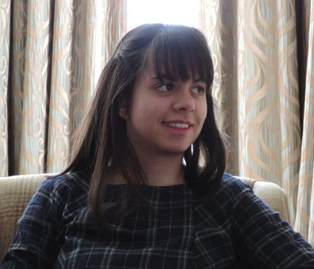

I am a PhD candidate in the Centre for Language Evolution at the University of Edinburgh,
supervised by Simon Kirby, Kenny Smith and Marieke Schouwstra.
I received my MA (Hons) in French and English Language and my MSc in the Evolution of Language and Cognition from the University of Edinburgh.
In January, I will begin a visiting postdoc position at the Max Planck Institute for Psycholinguistics,
in the Language Evolution and Interaction Scholars of Nijmegen (LEvInSON) group, on a project entitled Modality-specific effects in artificial
language learning experiments: measuring iconicity in silent gesture experiments.
In my research, I use the manual modality to investigate how linguistic structure evolves through cultural evolutionary processes,
namely interaction between language users and transmission to new language users.
I use silent gesture experiments (where hearing participants communicate using only gesture)
to study how language-like structure emerges in manual communication.
I am also interested in modality effects in emerging sign systems (e.g. iconicity) and how we can measure these effects in silent gesture experiments.